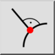
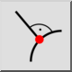
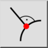
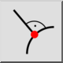

Loodrecht
Werkbalk / icoon:
 

Menu: Vang > Loodrecht
Sneltoets: S, U
Opdrachten: snapperpendicular | su
Dit is een automatische vertaling.
Werkbalk / icoon:
 

Menu: Vang > Loodrecht
Sneltoets: S, U
Opdrachten: snapperpendicular | su
Snapt naar het loodrechte punt op een lijn, boog, cirkel of ellips. Dit geldt alleen bij het tekenen van lijnen.